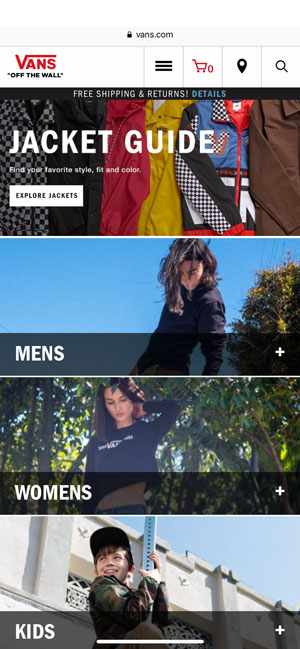
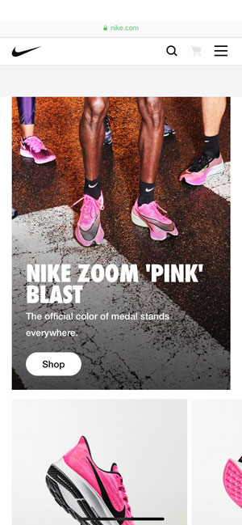

Repetition
Vans
vans.com Repetition is a great way to list out options on a website because it helps the user be able to identify that those options belong together for one similar purpose. The way repetition is used in this website design is by using the same size images, although every picture is different, they each contain a picture of a person that represents the menu option. This type of design is very well organized and it's easy to work with because of its simplicity.
Contrast
Apple
apple.comI was about to use this example for the "White Space and Clean Design", but then I noticed how great of a contrast the first image has, I decided to use this example for contrast instead. It sure is a great way to catch the viewer's eye, especially when it directs them to an ad for the new product they just launched. The color black is deffinitely not a common background for a picture or a website in general, therefore, it was genious of them to use black for the background of their add and white for the font. There's litteraly no better contrast than white on black!
White Space & Clean Design
Nike
nike.com Nike is one of the only online stores I like to visit. One of the reasons why is because it's well organized and "clean". What makes it look clean is the amount of color white they use all hroughout their site. White is a color that provides peace and neatness. Just like some peple believe that silence is not good, the same thing happens with color. The bottom line is that you can never have "too much" white in a website, as long as you're adding content and other pops of color as Nike did with the pictures of their products all around their site.